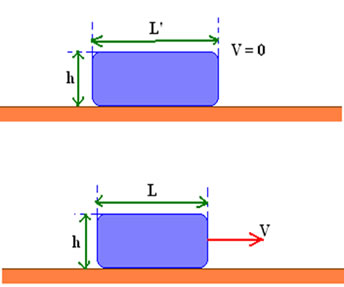

Sumário
Contração do Comprimento
É uma teoria que surgiu junto a teoria da relatividade de Einstein. Nela é dita que o comprimento de um objeto em movimento se torna menor do que o mesmo objeto em repouso. Complicado né? Então, vamos usar a imagem abaixo para exemplificar essa ideia:

Representação da Contração do Comprimento - Link da imagem
Nela, temos o mesmo objeto, em repouso e em movimento,
respectivamente. A figura em repouso possui comprimento de L’ em relação ao observador.
Num outro momento este mesmo corpo passa a ter uma velocidade V. Einstein afirma
que esse corpo em movimento vai apresentar um comprimento L, sendo L < L’.
Mantém a mesma altura h.
Equação da Contração do Comprimento
Dessa maneira, pode-se dizer que houve uma contração no
comprimento. A equação abaixo é responsável pela ligação entre esses comprimento.
Nela vemos os elementos:
- L = Comprimento do objeto em movimento;
- L' = Comprimento do objeto em repouso;
- v = Velocidade Relativa entre o referencial;
- c = Velocidade da Luz no vácuo.
RESUMÃO
Chegou a hora de fazer o Resumão! Para isso, aqui vão algumas dicas para você fazer o seu de forma completa e saber tudo sobre a Contração do Comprimento:
- Lembre-se que a teoria fala de um objeto que em movimento possui uma diminuição do seu comprimento
- Procure lembrar do nome e do que se trata a teoria, será mais fácil ao ouvir Contração do Comprimento,se você souber que se trata da diminuição do tamanho de um objeto quando o mesmo está em movimento.
Refêrencias